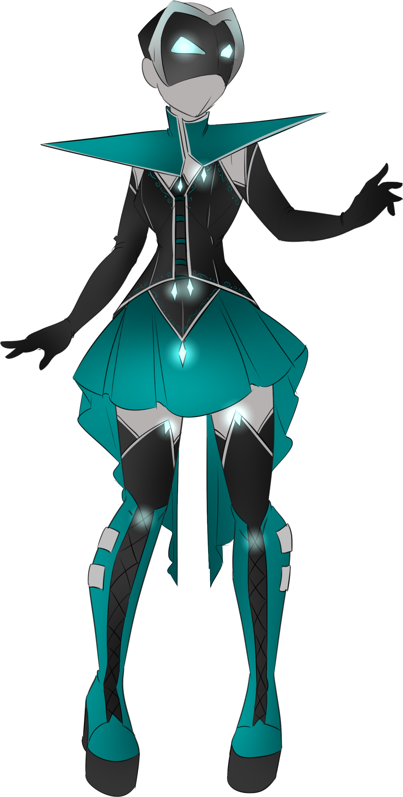
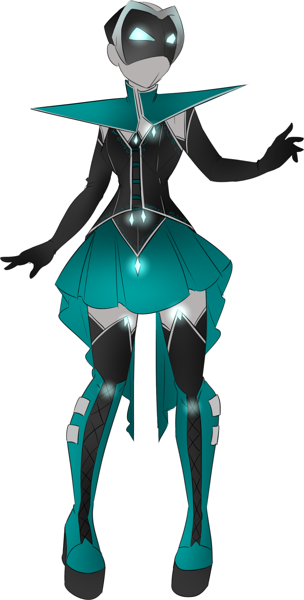

Cloaked in mystery, Dissonant Discord is a constant force of opposition to the Starlite 7th. She is at times friend
and at times foe of the team, though more often the latter. Discord is only out for herself and willing to help whoever will
help her reach it. That being said, she is a overwhelming force on the battlefield and is capable of holding off the entire team
at once. Drop your guard once and it might be that last thing you do.
Dissonant Discord has also been seen as an unofficial extra member of the Lovely Hearts, having saved the team on a number of desperate occasions.
That she aids on group and hurts the other is a source of endless speculation and part of the tension between the Starlite 7th and the Lovely Hearts.
Dissonant Discord draws power from the Heavens and she fights for her own goals.